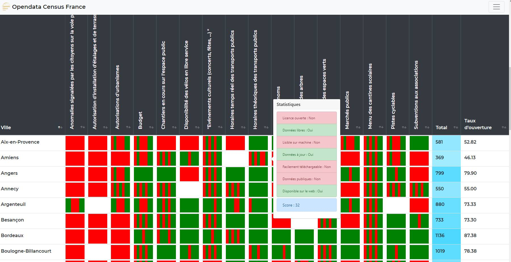

Vous trouverez ici d'autres projets inclassables sur le site
Opendata Census est un projet collaboratif de collecte et d’analyse des sets de données mis en ligne pas les collectivités territoriales. Son objectif est de sensibiliser les citoyens et responsables politiques à la diffusion des données ouvertes en fournissant une vue d’ensemble de l’open-data en France. Sur cette plateforme, il est possible de voir quelles sont les communes les plus avancées dans ce domaine, mais aussi les jeux de données disponibles, sourcés, ainsi que leurs modalités d’utilisation.
Analyse de 611 jeux de données ouverts portés par 42 communes françaises de plus de 100 000 habitants : Horaires des transports en commun, budget administratif… 15 thématiques sont analysées dans un tableau dynamique donnant une vue d’ensemble sur l’open-data en France.